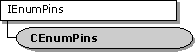

description: The CEnumPins class implements an enumerator for pins. ms.assetid: 8729f294-c76d-404f-9f51-7565470eced8 title: CEnumPins class (Amfilter.h) ms.topic: reference ms.date: 4/26/2023 topic_type:
[The feature associated with this page, DirectShow, is a legacy feature. It has been superseded by MediaPlayer, IMFMediaEngine, and Audio/Video Capture in Media Foundation. Those features have been optimized for Windows 10 and Windows 11. Microsoft strongly recommends that new code use MediaPlayer, IMFMediaEngine and Audio/Video Capture in Media Foundation instead of DirectShow, when possible. Microsoft suggests that existing code that uses the legacy APIs be rewritten to use the new APIs if possible.]

The CEnumPins class implements an enumerator for pins.
This class implements the IEnumPins interface. It calls the following CBaseFilter methods:
If the filter dynamically creates or destroys pins, it increments the pin version whenever the pins change. If the version number changes, the enumerator object is no longer synchronized with the filter. Once the enumerator is out of sync, the methods in CEnumPins return VFW_E_ENUM_OUT_OF_SYNC. Call the CEnumPins::Reset method to resynchronize the enumerator.
| Public Methods | Description |
|---|---|
| CEnumPins | Constructor method. |
| ~CEnumPins | Destructor method. Virtual. |
| IEnumPins Methods | Description |
| Clone | Makes a copy of the enumerator with the same enumeration state. |
| Next | Retrieves a specified number of pins. |
| Reset | Resets the enumeration sequence to the beginning. |
| Skip | Skips over a specified number of pins. |
| Requirement | Value |
|---|---|
| Header | Amfilter.h (include Streams.h) |
| Library | Strmbase.lib (retail builds); Strmbasd.lib (debug builds) |